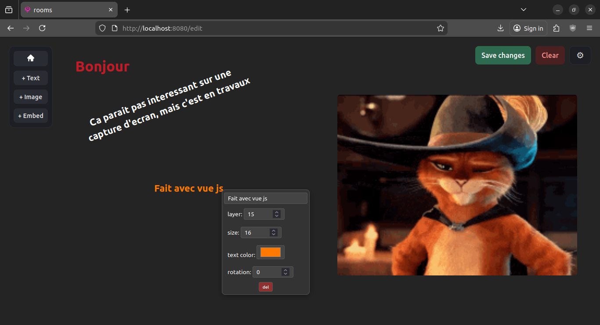

Programmation Web
Durant le cursus ainsi que mes occupations personnelles j'ai eu l'occasion de faire du web, donc frontend (js vanilla, vue, tailwindcss) et backend (fastify, sqlite, postgresSQL), ainsi que d'autres technologies (Docker, nginx, wordpress, imgproxy, prisma...)
SPA vanilla
Mon principal projet web fait est ft_trancendence, un projet de groupe demandant de faire un pong en ligne avec chat et systeme de comptes. Ce projet avait des contraintes tres restrictives, comme par exemple faire du frontend avec comme seul framework un outil de css, ainsi qu'etre un projet de découverte et avoir une contrainte de temps

SPA avec frameworks
Ensuite j'ai commencé a faire un autre projet: rooms. Ce projet n'etant pas prioritaire et surtout un projet solo, il n'est pas encore fini mais m'a déjà permis de décourvrir des outils professionels tels que vue-js, prisma, vite, et bien d'autres.
